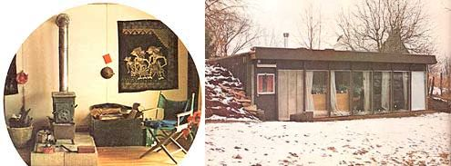

Everyone knows that passive solar heating is a viable means of keeping a house warm in Arizona, New Mexico, or California. Not everyone knows that simple passive solar heating can also be used to "cozy up" a dwelling in Athens, Ohio . . . as William T. Beale just proved during the "worst winter in over a century"!
Imagine a solar-heated cottage with no collectors, no pumps, no storage tanks, no thermostats, no heat exchangers . . . none of the trappings of conventional "active" solar heating installations. Then imagine that same dwelling recessed into the side of a hill . . . and you've got a pretty good idea of what William T. Beale's $6,000 solar-heated guest house is all about.
Last summer, Beale (a heat transfer engineer of 25 years' experience) set out to design and build a small guest house on his Athens, Ohio farm . . . a dwelling that would use the sun's energy for heating, but without the aid of pumps, temperature sensors, and similar high-technology devices. ("I'd helped install an 'active' solar heating system on a house in this area some time before," Beale explains, "and I knew from that experience that a complex, water-carrying system was not the way to go.")
What Beale ended up building was a 16' X 30' one-room (plus lavatory) cottage that [1] absorbs Ole Sol's radiant energy directly (like a black car sitting in the sun) and [2] uses the earth itself as the major regulator of its temperature. Beale's guest cottage is-in effect-a live-in solar collector built into the side of a hill.
And darned if the little "lithospheric solar collector" hasn't turned out to be quite a comfortable abode! Beale says that there were days last winter when the outside air temperature was a nippy 0°F and the ground was blanketed with snow . . . while the tiny guest house was so warm inside that-in William Beale's own words-"we actually had to worry about keeping the place cool!"
Beale's solar-heated guest house is as cozy inside as it is for several (darn good) reasons.
First of all, the house's walls and ceiling contain a full six inches of fiberglass insulation. ("Somebody-I forget who once said that if you could insulate a dwelling as thoroughly as it ought to be insulated, you could keep the place warm with a toaster," Beale points out. "I operate on that assumption.")
Second, the south side (that is, the front) of the 16' X 30' building consists almost entirely of double-pane glass. This makes the cottage such an efficient absorber of solar energy that, even on very cloudy days, the dwelling takes in more thermal energy than it lets out. (Of course, the same windows that are so effective in trapping the sun's energy during the day also tend to pass Btu's like a screen door at night . . . so after sundown, the Beales cover the windows with 2" X 4' X 8' Styrofoam "shutters", and thus lock the dwelling's collected warmth inside for the evening.)
Third, Beale built the small house back into the side (the south side) of a hill. This, of course, shelters the cottage from chilling winds . . . but-more important-the earth that surrounds the house tends to maintain the building at a more-or-less constant 55°F year round. Thus, no matter how cold it is outside, all that's needed to make the tiny dwelling perfectly comfortable inside is enough heat to raise the building's temperature 15°F (from 55° to 70°). And that heat can come from either [1] Ole Sol himself, or [2] the Jøtul No. 602 wood stove that the Beales installed for backup warmth . . . or both.
Behind the guest house is a rock-filled heat storage area, through which Beale had planned to circulate room air (via openings in the dwelling's floor and north wall) for better daytime/nighttime temperature modulation. "This part of the system doesn't work, though," says Beale, "because I did sort of a dumb thing. You see, I filled the rock storage area with crushed limestone, which-in a very short period of time-spontaneously disintegrated and blocked the flow of air through the system.
"So what I have now," Beale admits, "is a little house that gets hot in the daytime and wants to cool off as soon as the sun goes down. But even that's OK, because last winter when it was really cold and the wind was blowing hard and everyone else was worried about having enough natural gas or fuel oil, our little guest house was warm as could be. In fact, the house was so warm that my mother-in-law-who was living in it at the time-was complaining about having to take off some of her clothes in order to stay cool. She told me, `If I have to peel off ALL of my clothes, I'm coming over to your house!' "
Incredibly, Beale reports that on the average, his guest house required only 20 pounds of wood per day for supplemental heat last winter . . . and we all know what last winter was like. (According to Beale, the dwelling's Jøtul stove consumed just 40 pounds of wood during the bitterest, coldest 24-hour period of the winter!)
"The rest of the house's heating requirements," the 49-year-old engineer states, "were satisfied by the sun. I haven't attempted any detailed measurements, but I'd estimate that the building gets at least 50% of its Btu's in the form of sunlight . . . maybe as much as 70%. And since we cut our own wood for the Jøtul, it doesn't cost us anything at all-except for the gas and oil in the chain saw-to heat the little place."
Nobody knows the answer to this question, inasmuch as the semi-subterranean cottage has only been in existence since last fall. Beale, however, believes that the building should prove to be reasonably cool inside during hot weather, since [1] the dwelling is surrounded on three sides by ton upon ton of 55° earth, and [2] Beale carefully positioned the house's roof overhang so that it would let in light from the low winter sun yet block out (to an extent) light from the high summer sun.
Beale admits that the small house could turn out to be uncomfortably warm in hot weather. "Still," he says, "I'd rather pay that price than use complicated and costly gadgetry to cool the dwelling three months out of the year."
One of the things William Beale likes most about his lithospheric solar-heated guest house is the dwelling's peaceful "feel" inside. Says Beale: "When I come home after a difficult day at the office, this is where I go to relax. There can be a howling storm outside, but inside this little house it's quiet and calm and bright and warm, and after a few minutes I can't help but begin to feel peaceful."
Warm in 0° weather, quiet in a howling storm, and as economical to heat as the day is long . . . that's William Beale's solar-heated subterranean guest house!
|
 |
|
|